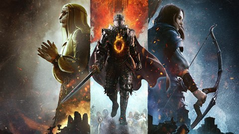

Jogos em Promoção
Com até 50% de desconto, Diablo IV é um jogo de RPG de ação e aventura.

Jogos em Promoção
Com até 50% de desconto, Baldurs Gate III é um jogo de RPG com elementos para um jogador e multijogador.
Delta Gaming
Delta Gaming é uma plataforma de jogos e aplicativos para você se divertir e economizar.
Item 2
Item 3
Item 4
Item 5
Jogos populares

Life I Strange
Max percebe que a pessoa responsável pelo crime pretende agir
novamente nas duas realidades. Será que a Max consegue usar os
novos poderes dela de alternar entre linhas do tempo para
desvendar o mistério e impedir o assassinato?
Batman
Entre nas sombras do mundo aberto de Batman: Arkham City, o
novo “lar” de segurança máxima para bandidos, gangsters e
gênios do crime insanos. Em Batman: Arkham Knight, percorra as
ruas de Gotham e enfrente a ameaça suprema na conclusão épica
da trilogia.
Baldurs Gate III
Baldur's Gate III é um jogo eletrônico de RPG com elementos
para um jogador e multijogador. Jogadores podem criar um ou
mais personagens e formar um grupo ao lado de uma variedade de
personagens já criados para explorar o enredo do jogo.
Elden Ring
Elden Ring é ambientado em um mundo de fantasia de larga
escala, conhecido como The Lands Between. O jogador assume o
papel de um personagem que é conhecido como o "Lorde da
Ceniza", que é encarregado de encontrar e destruir as fontes
do poder mágico que sustentam o mundo.
FIFA
O FUT 22 redesenha o Division Rivals e o FUT Champions para
criar uma maneira mais acessível de testar suas habilidades e
seu progresso contra outras pessoas, oferece ainda mais
maneiras para deixar o seu clube com a sua cara, com novas
opções de personalização dentro e fora do campo, e apresenta
os Heróis do FUT
RPG
Cyberpunk
Cyberpunk 2077 é uma história de aventura e ação de mundo
aberto ambientada em Night City, uma megalópole obcecada por
poder, glamour e modificações corporais.
Diablo IV
Situado no mundo de Santuário, Diablo IV se passa logo após
Diablo III: Reaper of Souls. Cultistas invocaram a principal
antagonista e filha de Mephisto, Lilith. Depois dos eventos
dos jogos anteriores, as forças de anjos e demônios se
esgotaram, abrindo uma chance para que ela estabeleça seu
poder sobre Santuário.

Dragons Dogma II
Dragon's Dogma 2 é um jogo de RPG em mundo aberto onde
assumimos — acredite se quiser — o papel do Escolhido, o ser
destemido e destinado a matar o dragão ou morrer tentando,
acompanhando de seu grupo de companheiros — conhecidos como
peões.
Starfield
Crie qualquer personagem que quiser e explorar com liberdade
inigualável ao embarcar em uma jornada épica para responder ao
maior mistério da humanidade. No ano de 2330, a humanidade se
aventurou além do nosso sistema solar, colonizando novos
planetas e vivendo como exploradores do espaço.

Hogwarts Legacy
Em resumo, Hogwarts Legacy é um jogo de RPG de ação que
oferece aos jogadores uma oportunidade única de explorar o
mundo mágico de Harry Potter, enquanto vivenciam a vida como
um estudante de Hogwarts, aprendendo novos feitiços,
enfrentando desafios e interagindo com personagens icônicos do
universo de Harry Potter.
Lançamentos

Assassins Creed Shadows
Torne-se uma assassina shinobi letal e um poderoso samurai
lendário enquanto explora um mundo aberto maravilhoso em
tempos caóticos. Jogue com dois aliados improváveis enquanto
desvenda uma história em comum e traga uma nova era ao Japão.

DRAGON AGE™: THE VEILGUARD
Entre no mundo de Thedas, uma terra vibrante e repleta de
florestas selvagens, labirintos traiçoeiros e cidades
cintilantes, com combate brutal e magias secretas.

GTA IV
O jogo acompanha uma dupla criminosa: Lucia, a primeira
protagonista feminina da franquia desde 2000, e seu parceiro;
o primeiro trailer mostra Lucia como uma presidiária e,
posteriormente, fugindo da custódia com seu parceiro.

Star Wars Outlaws
Embarque em missões de alto risco Aceite missões arriscadas e
vantajosas dos sindicatos do crime galácticos. Como uma das
mais procuradas da galáxia, roube bens valiosos, infiltre-se
em locais secretos e engane inimigos.

South of Midnight
South of Midnight é uma nova ação e aventura da Compulsion
Games. Explore os mitos e enfrente criaturas misteriosas do
Extremo Sul neste conto popular moderno enquanto aprende a
tecer um poder antigo para superar obstáculos e enfrentar o
sofrimento que assombra sua cidade natal.